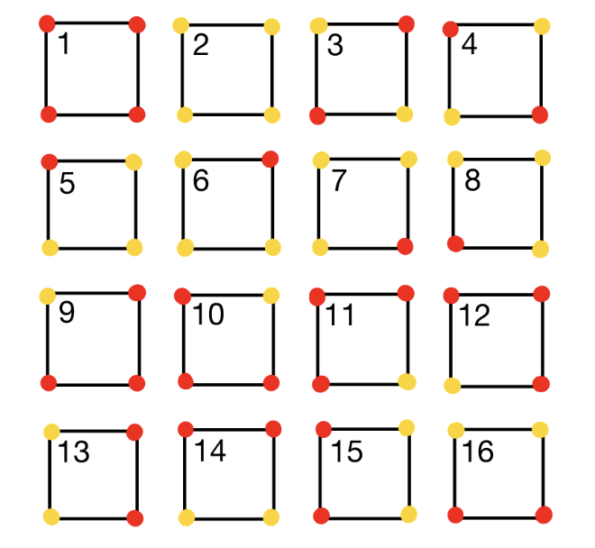
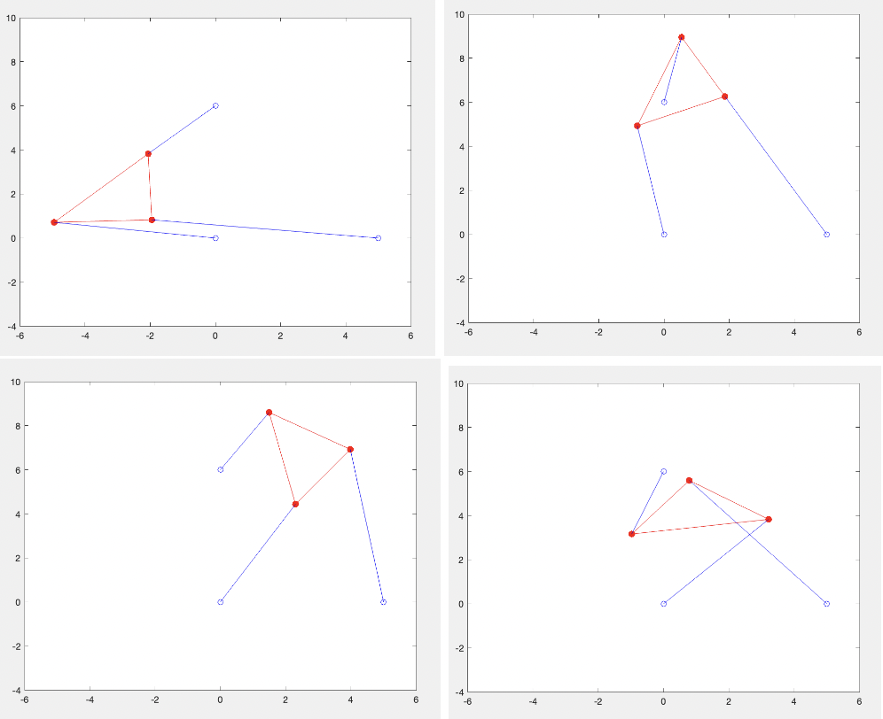
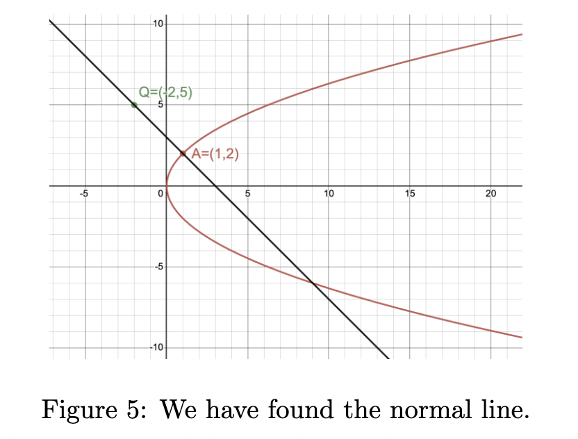

Peer Review Process: AI Generated Proofs vs Student Generated Proofs

This multifaceted yearlong project explored everything from the art of crafting proof-writing prompts to the competency of the response given, while also considering student anxieties in peer review situations. The driving question was to determine if the technology could be used as a resource by professors in early proof-writing courses. I began by analyzing different proofs that various AI tools generated when exposed to elementary proof-writing prompts. I used these generated proofs to complete a blind study where students were asked to critique proofs without knowing who authored them: a peer or an AI machine. I then gathered feedback from students about their experience, particularly their feelings about critiquing peer work in a mathematics setting. Additionally, I created an obstacle course for multiple different AI tools which was used to compare and analyze their answers, allowing me to draw conclusions about the thinking process and shortcomings. Given the growing integration of AI in education, this project is especially relevant. I had the opportunity to present my findings in a poster session at the 2023 Southeastern Section Meeting of the MAA, as well as at HPU’s research symposium.
View ProjectBurnside's Theorem
Burnside's Theorem is a popular theorem combinging the world of permutations and group theory. In this exploration of the theorem we focus on basic vocabulary concepts needed to understand how the theorem works. As well as ways in which we see this theorem applied in everday life. This was not an exploration of the proof of the theorem but the proof is on the same mathematical level as ideas presented here.
View ProjectStewart Platform
The stewart platform is stabalizing mechanism that is used widely in the feild of animatronics and flight simulation. This project takes a deeper dive into understnading the mathematical calculation done by a stewart platform. It takes a walk through solving a forward kinematics problem complete with equations and graphs. The programs needed to run these simulations are attached in the apendix.
View ProjectApollonius Finds a Normal
Apollunius was a famous mathematician. He contributed many discoverys to the field. One of those being the normal of a tangent line. This paper discusses the process he took to find this normal while also giving historical background into Apollonius himself. The concept of a normal line is something students today still learn, taking this historical dive into the concepts helps students gain a deeper understanding into the content.
View Project